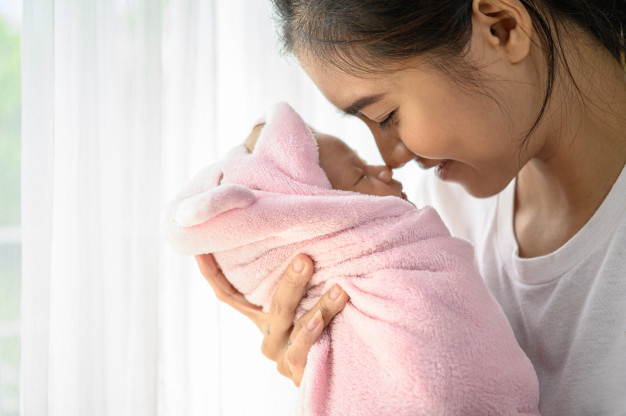
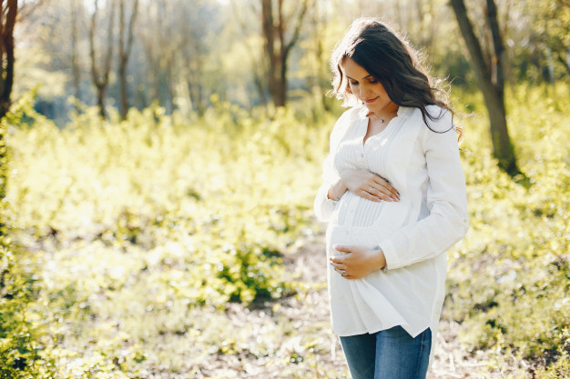
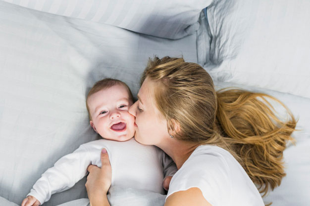
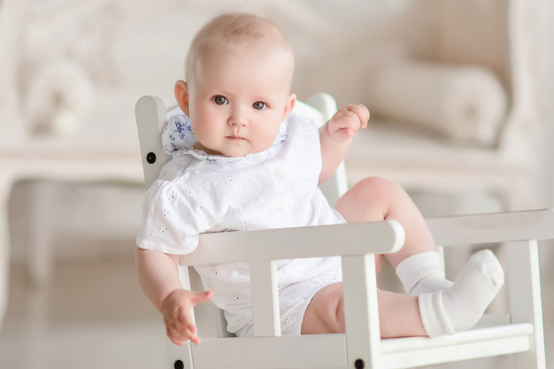
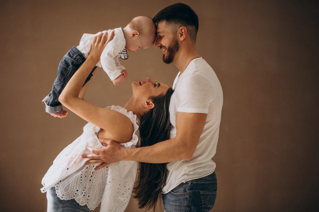
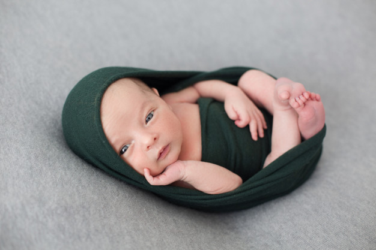

攝影是一種感受、感動和愛的方式
PM studio為您記錄專屬的回憶 成就無價的幸福點滴
精選照片
arrow_back_ios
    
arrow_forward_ios
看更多…
經驗分享
沙莫太太 分享於
S.PACE
這次入住的是璽悅月子中心, 配合的是 PM Studio (Click here) 當天拍攝的時候攝影團隊有3位,都穿上了月子中心準備的無菌衣物,給寶寶拍的東西都會用殺菌燈殺菌過,讓人看了很放心,畢竟寶寶在滿月之前碰觸的東西都要很小心別碰觸到細菌（我坐月子的時候手都快洗到脫皮）最厲害的是原來寶寶喜歡白噪音,他們用來安撫寶寶的情緒,捕抓美麗的照片!
還跟PM的堡鹿聊了好久,才發現原來她們這個團隊之前是婚紗攝影界很有名氣的噎！還幫很多藝人拍過婚紗～哈哈！
Nadav Kander 攝於 2017/3/14
Aiko愛可。愛生活 分享於
facebook
今天翻到當時在 御兒軒產後護理之家，他們配合的寶寶攝影PM studio｜攝影工作室，他們拍好的照片放在資料夾竟然一直忘了發給你們看！！！
除了可愛的寶寶寫真，爹娘也入鏡真的很值得紀念，最重要的是有把我們拍瘦，不然產後爹娘真的都好胖，哭哭～而且閃亮拍了好多造型都可愛到爆炸！
Nadav Kander 攝於 2019/7/15
Kyra Kuo 分享於
痞客邦
拍攝當天看到差點一為自己進到手術室! 因為整個攝影團隊都穿著藍色的隔離衣, 防落髮帽, 口罩! 因為御兒軒月子中心的疾病控管非常的嚴格, 寶寶入院之後, 除了媽媽和爸爸可以接觸寶寶之外, 寶寶不能接觸外人, 連哥哥姊姊也不行最高等級的隔離呀!
所以在住宿期間的寶寶拍攝,他們的團隊要整個消毒隔離後才可以接觸寶寶 怪不得我以為我進到開刀房啦! XDD 整格團隊有一個主攝影師和兩位助理 非常專業! 他們立刻換setting, 拿出背板開始拍他的大頭照!
Nadav Kander 攝於 2020/2/4

經驗分享
這次入住的是璽悅月子中心, 配合的是 PM Studio (Click here) 當天拍攝的時候攝影團隊有3位,都穿上了月子中心準備的無菌衣物,給寶寶拍的東西都會用殺菌燈殺菌過,讓人看了很放心,畢竟寶寶在滿月之前碰觸的東西都要很小心別碰觸到細菌（我坐月子的時候手都快洗到脫皮）最厲害的是原來寶寶喜歡白噪音,他們用來安撫寶寶的情緒,捕抓美麗的照片!
還跟PM的堡鹿聊了好久,才發現原來她們這個團隊之前是婚紗攝影界很有名氣的噎！還幫很多藝人拍過婚紗～哈哈！ Nadav Kander 攝於 2017/3/14
今天翻到當時在 御兒軒產後護理之家，他們配合的寶寶攝影PM studio｜攝影工作室，他們拍好的照片放在資料夾竟然一直忘了發給你們看！！！
除了可愛的寶寶寫真，爹娘也入鏡真的很值得紀念，最重要的是有把我們拍瘦，不然產後爹娘真的都好胖，哭哭～而且閃亮拍了好多造型都可愛到爆炸！ Nadav Kander 攝於 2019/7/15
拍攝當天看到差點一為自己進到手術室! 因為整個攝影團隊都穿著藍色的隔離衣, 防落髮帽, 口罩! 因為御兒軒月子中心的疾病控管非常的嚴格, 寶寶入院之後, 除了媽媽和爸爸可以接觸寶寶之外, 寶寶不能接觸外人, 連哥哥姊姊也不行最高等級的隔離呀!
所以在住宿期間的寶寶拍攝,他們的團隊要整個消毒隔離後才可以接觸寶寶 怪不得我以為我進到開刀房啦! XDD 整格團隊有一個主攝影師和兩位助理 非常專業! 他們立刻換setting, 拿出背板開始拍他的大頭照! Nadav Kander 攝於 2020/2/4